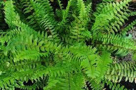
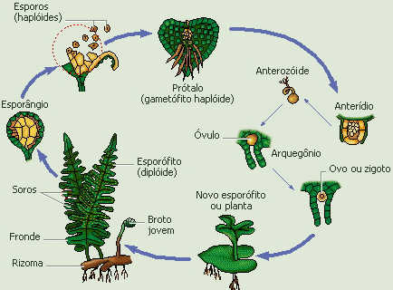

Pteridófitas
Estrutura
Com o surgimento do xilema e do floema, as plantas evoluiram adquirindo maior porte, as traqueófitas. Esses tecidos transportadores de seiva colaboraram para a sustentação de seu corpo, e possibilitaram o transporte rápido de água e sais minerais até a folha, e de seiva elaborada (água e substâncias produzidas na fotossíntese) das folhas para as demais partes da planta.
As pteridófitas foram o primeiro grupo de traqueófitas a surgir, e formam o conjunto de todas as traqueófitas sem semente.
Ciclo de vida
Existem duas fases de reprodução distintas nas pteridófitas, vamos estudar uma delas, presente nas samambaias:
Esporos de um único tipo (homosporia)
Nesse ciclo, no interior dos esporângios, que estão agrupados em soros nas folhas dessas plantas, ocorre a meiose, que dá origem aos esporos.
Os esporos desse ciclo dão origem à um único tipo de gametófito, que vai desenvolver tanto gametângios masculinos (anterídios) quanto femininos (arquegônios).
Com a presença de água, os anterozoides nadam até os arquegônios, de encontro às oosferas, onde ocorre a fecundação, originando o zigoto. O zigoto se desenvolve dando origem à um esporófito jovem, que se desenvolve reiniciando o ciclo.
